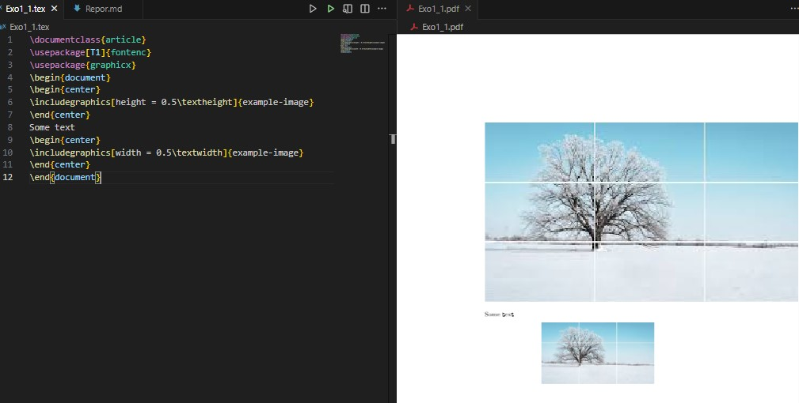
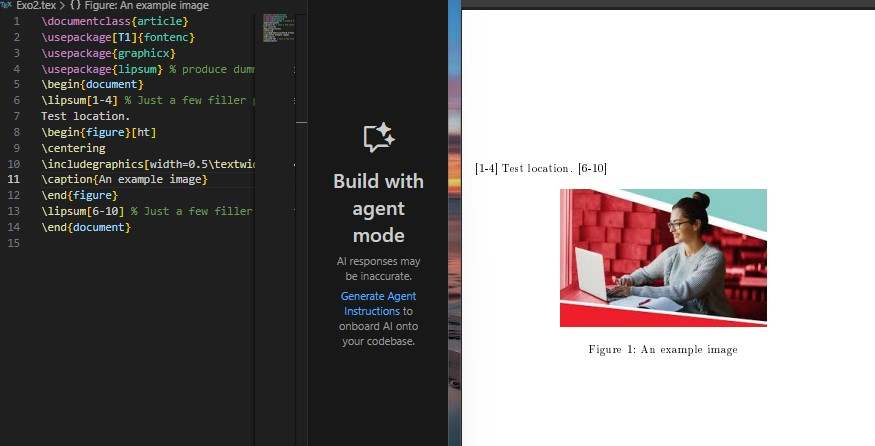
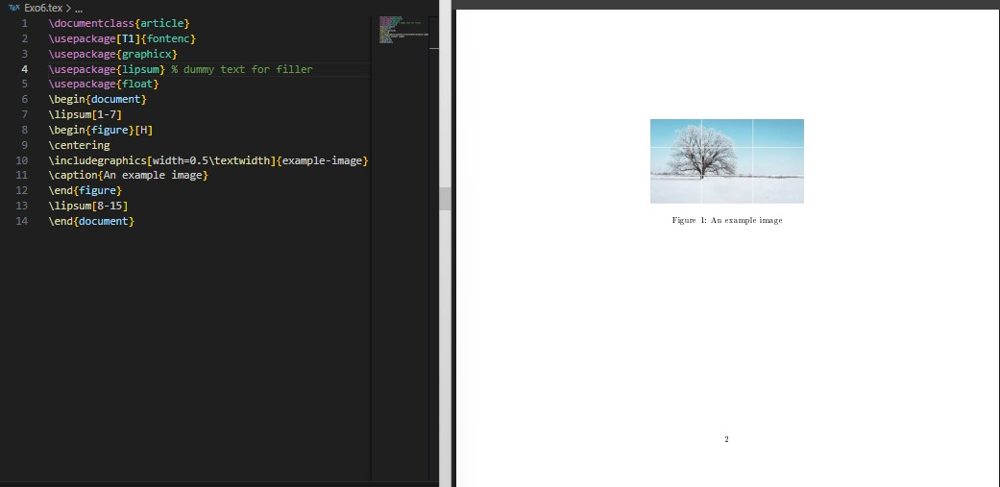
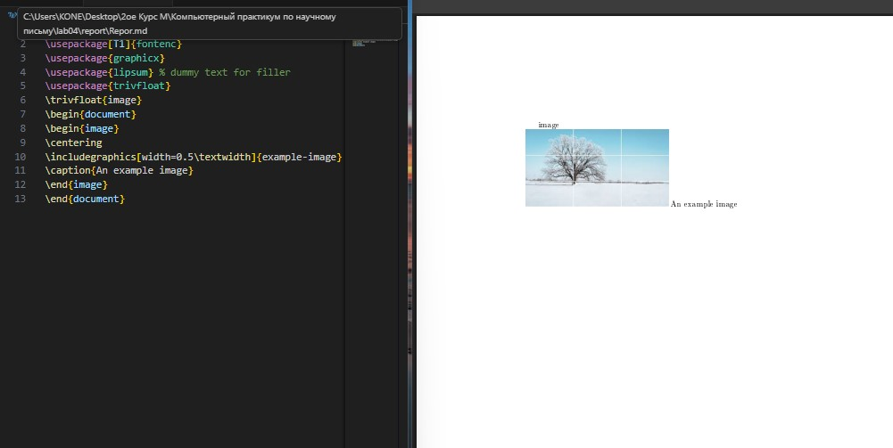
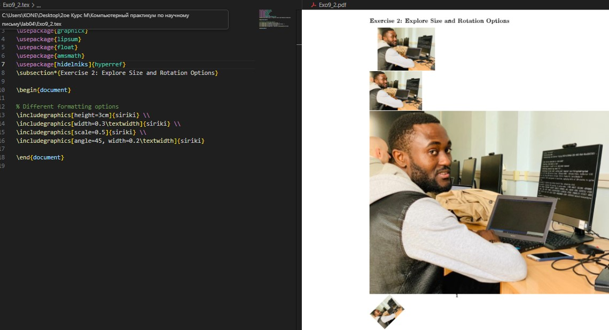
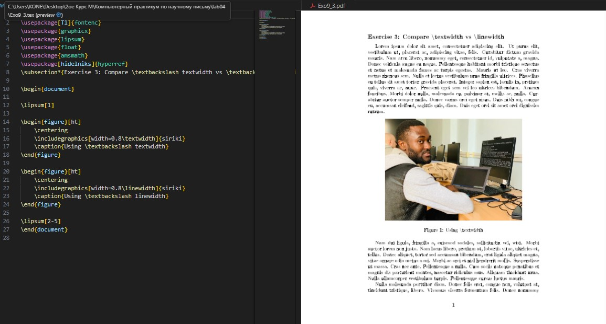
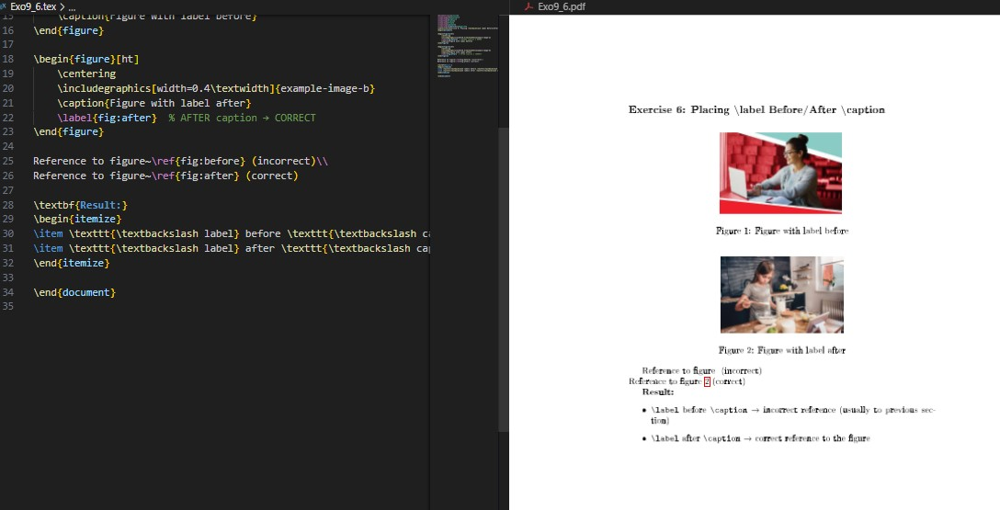
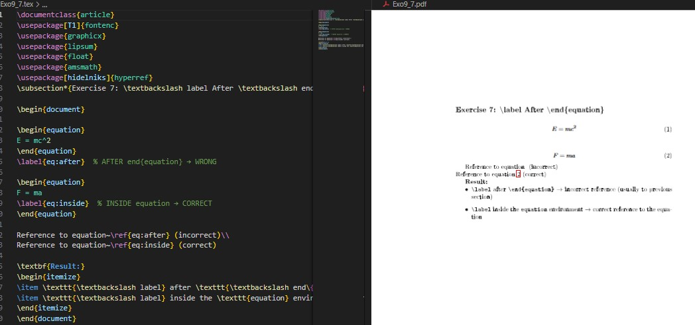

{width=80%}
{width=80%}Целью данной лабораторной работы является ознакомление с основами включения графики в документы LaTeX.
The purpose of this lab work is to learn how to include and manipulate graphics in LaTeX documents using the graphicx package and related tools.
Для включения внешних изображений в LaTeX используется пакет graphicx, который предоставляет команду \includegraphics.
To include external images in LaTeX, use the graphicx package which provides the \includegraphics command.
Команда \includegraphics имеет множество опций для управления размером и формой изображений.
The \includegraphics command has many options to control image size and appearance.

{width=80%}Изображения обычно включаются как плавающие объекты (floats) чтобы избежать больших пробелов на странице. Images are typically included as floats to avoid large gaps on the page.
{width=80%}
Пакет float предоставляет опцию H для точного размещения плавающих объектов.
The float package provides the H option for precise float placement.

{width=80%}Механизм \label и \ref позволяет создавать ссылки на пронумерованные элементы.
The \label and \ref mechanism allows creating references to numbered elements.

{width=90%}
{width=90%}Упражнение 1
 {width=90%}
{width=90%}
Упражнение 2

{width=90%}Упражнение 3

{width=90%}Упражнение 4
 {width=90%}
{width=90%}
Упражнение 5
 {width=85%}
{width=85%}
Упражнение 6

{width=85%}Упражнение 7

{width=85%}В ходе лабораторной работы №4 я изучил основы включения и управления графикой в документах LaTeX. Освоил работу с пакетом graphicx, научился создавать плавающие объекты, управлять их размещением и создавать перекрёстные ссылки на изображения.
In this lab work #4, I learned the fundamentals of including and manipulating graphics in LaTeX documents. I mastered the graphicx package, learned to create float objects, control their placement, and create cross-references to images.